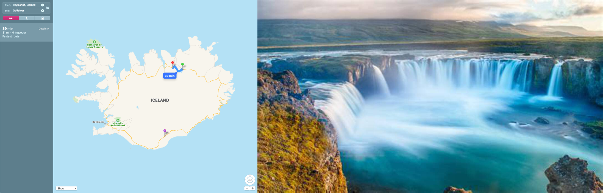

Iceland Adventure 2019
1 Flight from Luton
- Drive to Luton
- Drop off car on short stay car park
2 Arrival in Iceland and car pickup
- Go to the Hertz desk in the Terminal where you will be serviced by Firefly. The office is 500 m from the Terminal and a free shuttle bus service is available. Flight number mandatory.
- 1, Blikavellir, Keflavikurflugvollur, Keflavik, Iceland, 235
- +3545220022
3 Day 1 Thursday
3.1 Kerid crater
64.041729 -20.886319
3.2 Stokkur geyzer
64.maps/3127 -20.3006

3.3 Gullfoss Falls
64.3272 -20.1213
3.4 Finish at Hella bloat
63.8336 -20.4021
4 Day 2 Friday
4.1 Skogafoss Waterfall
63.5309 -19.5111
4.2 Dyrhólaey beach and cliffs
63.4037 -19.1123
4.3 Fjaðrárgljúfur canyon
63.7726 -18.173721- drive towards Kirkjubæjarklaustur
4.4 Finish at Kirkjubæjarklaustur bloat
63.7883 -18.0566- the above location
5 Day 3 Saturday
5.1 Skaftafell / Vatnajökull National Park
64.017 -16.968

- waterfall 64.0276 -16.9746
5.2 Iceberg lagoon
64.0489 -16.1837
5.3 Finish after long drive bloat
65.6384 -16.9036
6 Day 4 Sunday
6.1 Godafoss Waterfall
65.6833 -17.5501

6.2 Hverir Geyzer
65.6414 -16.8077
6.3 Nature baths
65.6304 -16.8482
6.4 Finish at Akureyri bloat
65.6755 -18.0939
7 Day 5 Monday
7.1 Free time
- We can think of volcano visit
7.2 Finish at Reykjavik bloat
64.1466 -21.8768
8 Flight back (Tuesday)
- Drop off car by 08:00
- Pick up board games